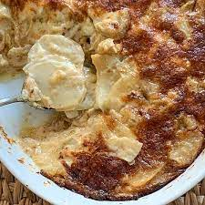

Potato Gratin

Description
Serves 10, from Ina Garten's The Barefoot Contessa Cookbook.
This recipe is a vegetarian side that is cheesy, kid-friendly comfort food at its finest.
Ingredients
- 2 fennel bulbs, stalks removed
- 1 yellow onion, halved and thinly sliced crosswise
- 2 tablespoons good olive oil
- 1 tablespoon unsalted butter
- 2 pounds russet potatoes, peeled (4 large potatoes)
- 2 cups plus 2 tablespoons heavy cream, divided
- 2 ½ cups grated Gruyère cheese, divided (½ pound)
- Kosher salt
- Ground black pepper
Steps
- Preheat the oven to 350 degrees. Butter a 10 x 15 x 2-inch (10 cup) baking dish.
- Cut the bulbs in half lengthwise and slice them crosswise, making approximately 4 cups of sliced fennel. Put the olive oil and butter in a medium (10-inch) sauté pan and sauté the fennel and onions together over medium-low heat for 10 minutes, until tender.
- Thinly slice the potatoes by hand or with a mandoline. Place them in a large bowl with the 2 cups of cream, 2 cups of Gruyère, 1 teaspoon salt, and ½ teaspoon pepper. Add the fennel and onion mixture and mix well.
- Pour the potato mixture into the prepared baking dish. Press down lightly to smooth the top. Combine the remaining 2 tablespoons of cream and ½ cup of Gruyère and sprinkle evenly on the top. Bake for between 1 and 1¼ hours, until the potatoes are very tender and the top is browned and bubbly. Allow to cool for 10 minutes and serve hot.